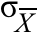
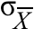
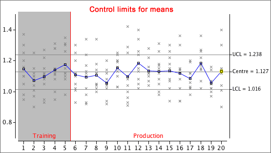

|  | = |
Control chart for means
We first consider detection of whether the mean output level of a process is changing. Each sample of n values has a mean whose standard deviation is
|  | = |
If we knew µ and σ, the appropritate control limits would therefore be:

Note that these control limits are much narrower than those that would be used for individual values,

Training data
Since neither µ nor σ are usually known, the control limits must be estimated from training samples in which great care is taken to avoid special causes. It would be reasonable to replace µ and σ in the control limits with the mean and standard deviation of the training data, but in practice, the control limits are usually based on the mean and range of the k training samples as follows:

where  is
the average of the k training sample means, and
is
the average of the k training sample means, and  is
average of their ranges,
is
average of their ranges,

The constant, A2, can be found from the following table provided the sample size, n, is no more than 10.
| Sample size, n | A2 |
|---|---|
| 2 | 1.880 |
| 3 | 1.023 |
| 4 | 0.729 |
| 5 | 0.577 |
| 6 | 0.483 |
| 7 | 0.419 |
| 8 | 0.373 |
| 9 | 0.337 |
| 10 | 0.308 |
Note that A2 depends on n, not the number of training samples, k.
Example

The control limits for the sample means are much narrower and are therefore more sensitive to changes in the process mean.
